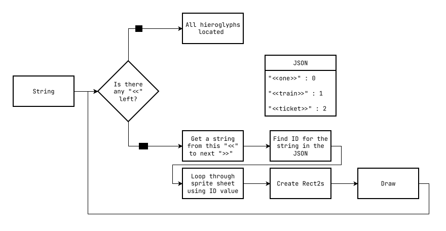
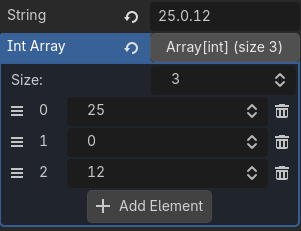

entry for GMTK Game Jam 2026.
joined a team of 10 people as a programmer.
game tells a short story about getting lost in a solar punk world,
where everyone speaks an unknown to you language. through observation
of surroundings, player slowly builds understanding of the language,
to buy a correct ticket for the train to reach your destination.
my task was creating a way to render this language into the world
and also make it interactable with the notepad
tecg's work
Lost in Trainslation
team effort | godot
puzzle game
development
creating different language in most cases is an easy task.
you map custom characters into english or any other language.
now, when you type they would appear as your language.
but it wasn't a usual case. a single character could represent a single word -
more like Chinese. so i needed a way to type in this language and locate correct hieroglyphs.
it's not including making it also interactable, but first step is typing and rendering.
drawing
main idea is to have a JSON
file, with translations pointing towards
texture patch with correct hieroglyph.
but there also should be a way differentiate
normal english from translation within a single line of string.
i've added '<<>>' brackets and used code to locate them

storing Vector2 as coordinates would work, but
it's inconvenient to use. a simple number, indicating position on a spritesheet
as ID makes more sense to other developers
CanvasItem.draw_texture_rect_region()
used to draw hieroglyphs. it takes two
Rect2. first tells where to draw,
second tells what part of the Texture2D
to draw
but a thought struck me: "what if word is made out of several hieroglyphs?".
so now i need a way to store and use arbitrary numbers of ID. my choice
was to use "*.*.*" format. a string where numbers separated with dot.
string looks beter and quicker to use then
Array[int]
in the editor as shown on the image below

iterating through this format is not a hard task. get the number with
String.to_int() and draw, like in a single number case
result is an easy to interact and expandable system which other developer can use
without constanly questining how to do this and that.
when it came to implementing this system a road block appeared in front of me.
to properly render language i need to render normal english along side it
solutions with spliting string into Label
(for the English) and TextureRect (for the language)
i dissmised immediately as a workaround not a solution.
since rendering text is time consuming rather then hard.
Font class provide tools for finding size of the text.
i am not going into details, because it's really just this:
find right function and position your text and hieroglyphs in the right place.
interaction
great, there is a Control node that can render our
language and english at the same time. now it's time to make it interactable.
let's start out with how it would look like. having a separate class for this purpose is prefferable. interactables will also be placed
in the world.
clickable area that holds encoded string ("*.*.*" format) and emits global signal
when clicked with this string attached. just standard godot usage.
but i want to mention ability to write in "<<***>>" format. this area
holds a variable where you can write normal words, which will be
automatically encoded and stored in another variable
@export var encoded: String = ''
@export var string: String = '' :
set(value):
string = value
encoded = encode_string(string)
you do not need to remember what number corresponds to what word/hieroglyph.
type a word with bracket and it will fill automatically.
just make sure this word exist in the JSON.
while it's not the ful extend of my work, i've covered main part of my contribution.
also initially i foolishly used
Area2D to look for players input in an area.
Node2D and Control
nodes doesn't really work well together, especially when it comes to interaction with mouse.
Control have some sort of priority, when it comes to mouse inputs.
nodes are layered always on top of each other, causing a lot of problems.
only some time later i refactored it to Control.
footnote
fun fact, no one actually knew that you can write IDs like that "*.*.*"" so big part of my system laid dormant for the whole duration of the jam. in some way, that's because there is no way to tell if this hieroglyph is one word or a part of a bigger word. with time not being on our side i decided to not mention this feature, to not expand scope of the project.